THE PODIUM · T9 — turn it any way, walk down its steps; the red half coils like the green; less black between things
1 · THE PICTURES FIRST
1.1 The staircase from the side and from below the rim — views that could not be reached before
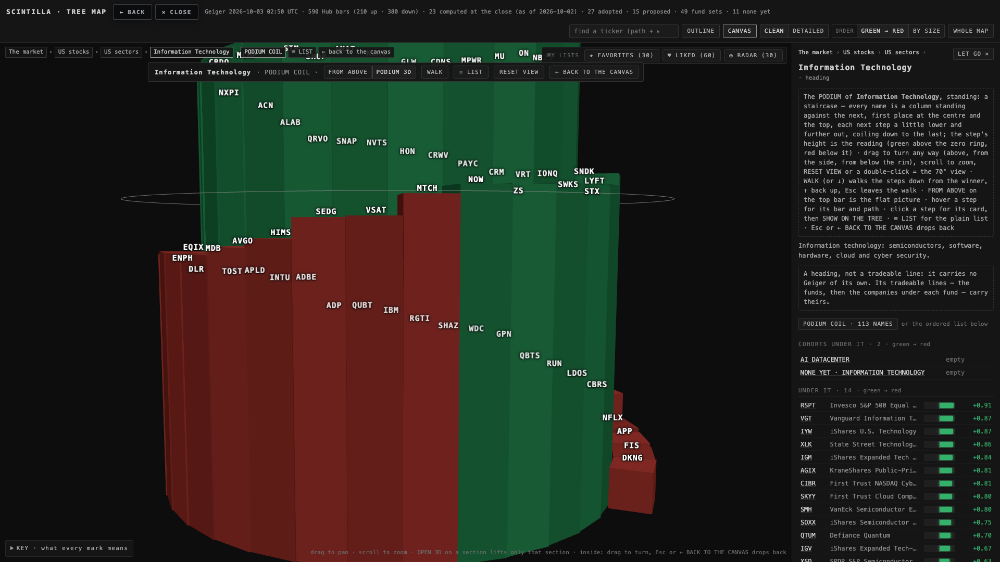
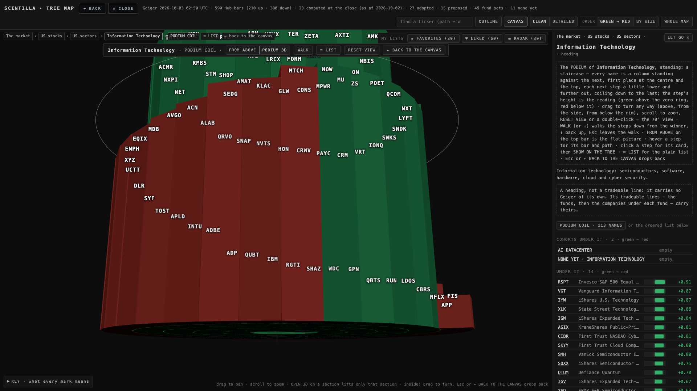
1.2 The walk — step 1, step 10, the last step (1920 × 1080)
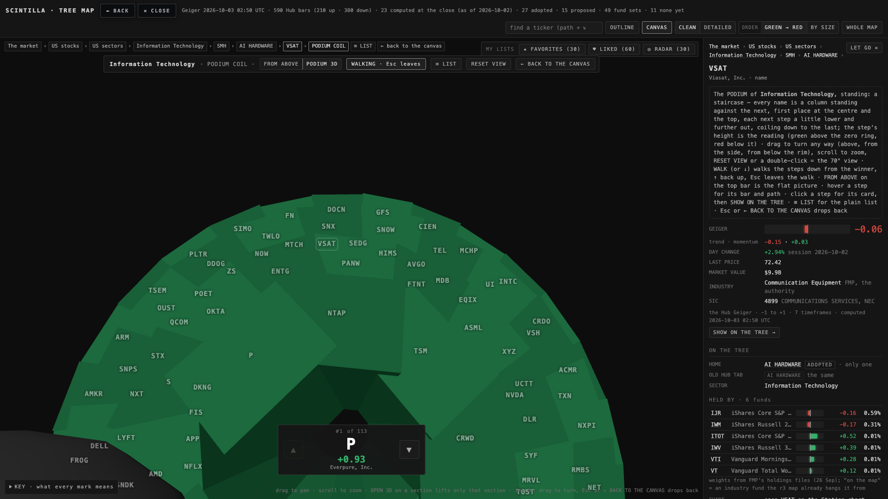
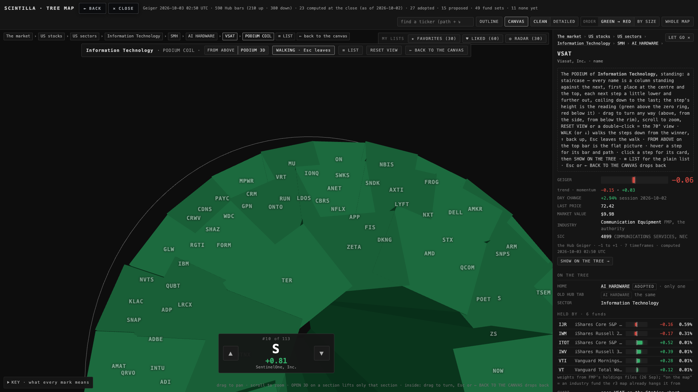
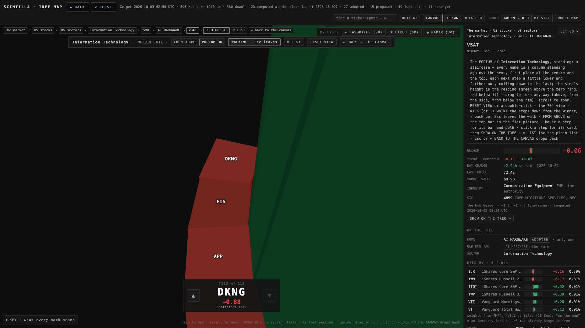
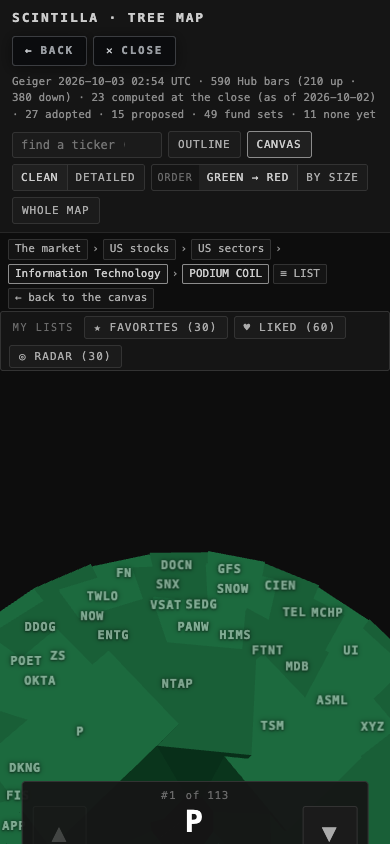
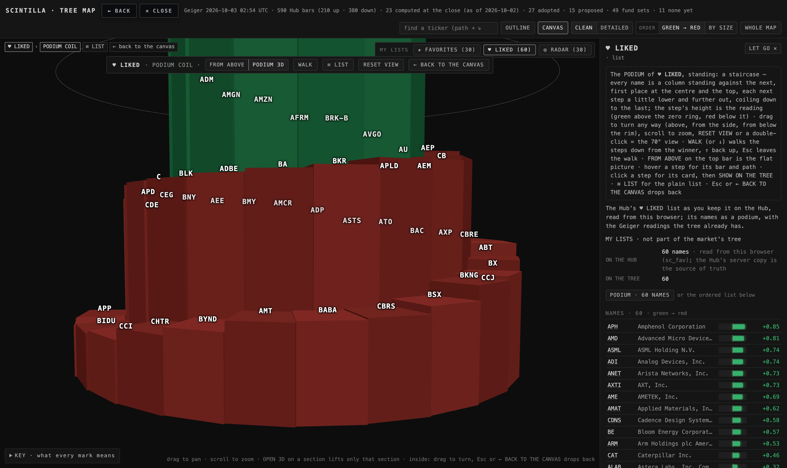
1.3 The four podiums the brief named, at the 70° starting view
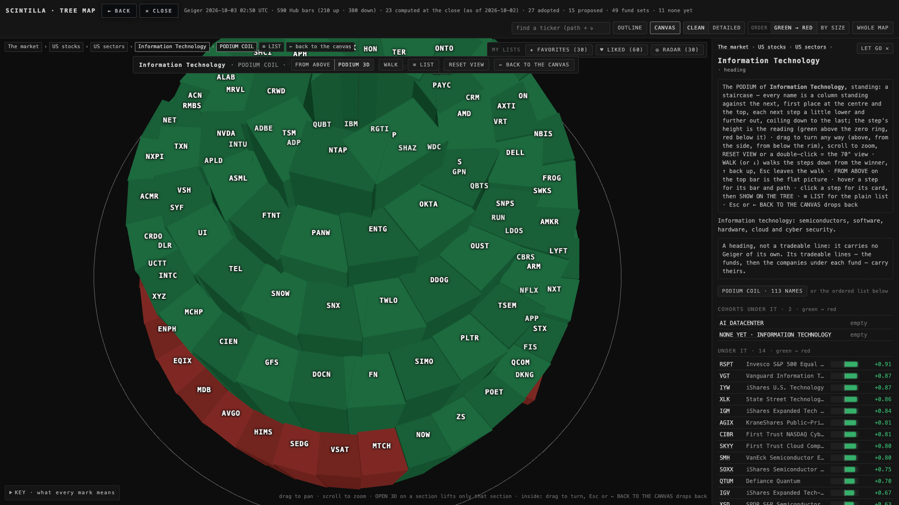
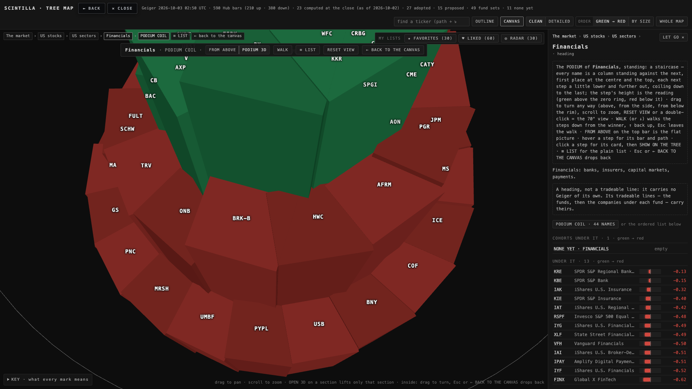
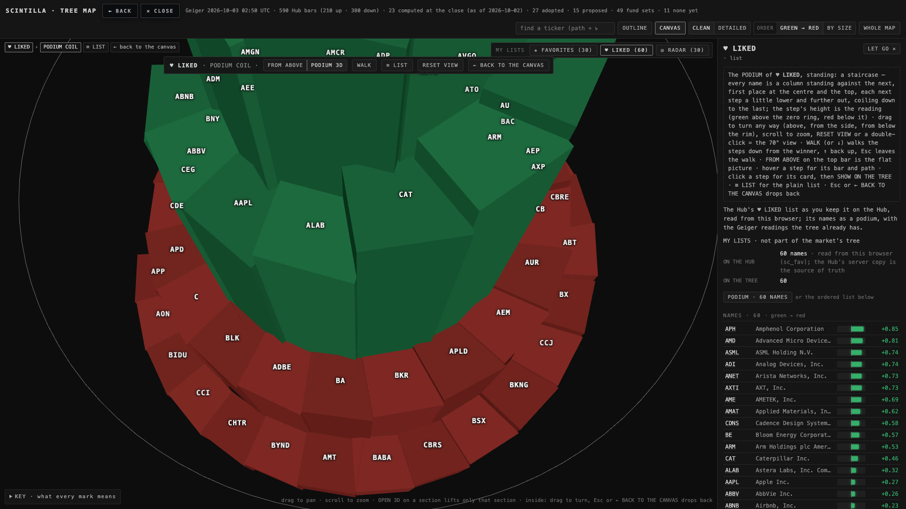
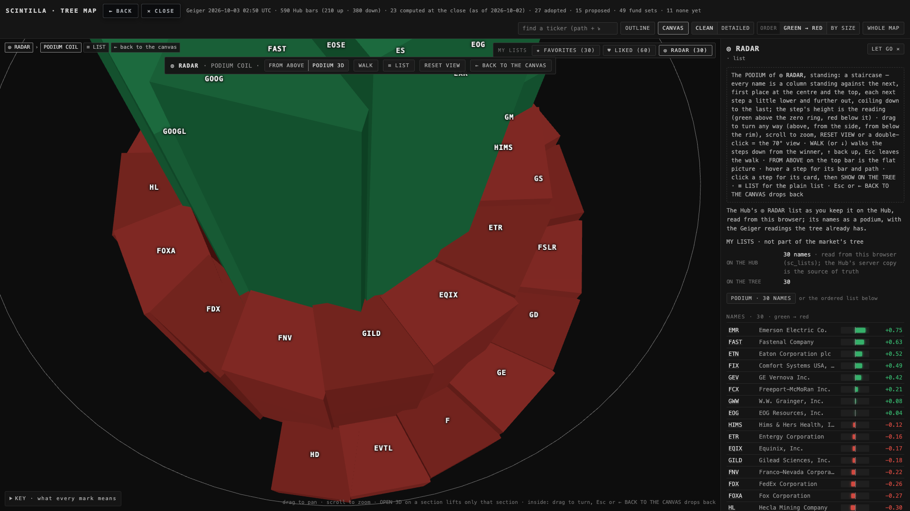
2 · WHAT CHANGED, ITEM BY ITEM, WITH THE NUMBERS
2.1 The red half coils like the green
Alan asked this on the live podium, which is T7's: there the zero line was drawn as a ramp and every red column hung under it, so the red half had no steps. T8 (not yet live when he spoke) already made the stair out of the readings themselves. This lane measured T8's rule on tonight's data rather than trusting it: the drop from one step to the next, divided by the difference of the two readings, is the "pitch per unit of reading". It must be one number above zero, below zero and at the step where the stair crosses zero.
| podium | steps | green / red | pitch above zero | pitch below zero | at the crossing | crossing |
|---|---|---|---|---|---|---|
| Technology | 113 | 82 / 31 | 216.53 | 216.53 | 216.53 | NOW +0.025 → MTCH −0.001 |
| Financials | 44 | 5 / 39 | 219.40 | 219.40 | 219.40 | SFNC → CVBF |
| ♥ LIKED (planted 60) | 60 | 19 / 41 | 173.11 | 173.11 | 173.11 | AMZN +0.015 → AFRM −0.06 |
| ◎ RADAR (planted 30) | 30 | 8 / 22 | 141.66 | 141.66 | 141.66 | EOG +0.036 → HIMS −0.121 |
Same rule on both sides, no gap between any two steps (every neighbour pair measures 0 along the outer edge), the treads fall from the first to the last. The number differs per podium only because the height scale H is lowered per podium so that no single drop exceeds one tread (T8's no-cliff rule). One thing did differ and was fixed: a name with no reading used to stand on a flat run at the floor after the last red step — exactly "forcing it flat". Now such steps keep coiling down a quarter tread each, in grey. None of the four podiums had one tonight, so the fix is proven on the code and the test, not in a picture.
2.2 Free rotation — the real limit was the mouse button
There was no angle clamp in the code. The limit Alan felt is this: on the flat CANVAS the left button and one finger are set to pan (drag to slide the canvas), and the podium inherited that. A left drag slid the staircase sideways; only the right button turned it, and on a phone one finger could not turn it at all. In the recorded walk on T8's page a vertical drag left the camera at 70° exactly. Now, inside the podium and inside a section's 3D, the left button and one finger turn (the right button pans), and the limits are set to the full sphere explicitly. The same drag now takes the camera from 70° to −13° (below the rim) at 1920 and to −21° at 1680. 70° stays the starting view; RESET VIEW on the top bar or a double-click on the canvas flies back to it (the recorded double-click returned the camera to the exact home position both inside the podium and inside Technology's 3D). On exit the canvas gets its pan mapping back.
2.3 The walk
WALK on the podium's top bar (it reads WALKING · Esc leaves while on). ↓ / J / PageDown / wheel down / ▼ = one step down; ↑ / K / PageUp / wheel up / ▲ = one step up; Home / End = first / last; Esc leaves the walk and flies back to the 70° view (the podium stays open; a second Esc closes it). The camera stands 120 units over the current tread, three steps back up the stair, and looks at the tread twelve steps ahead with a wider lens; each step is a 0.48 s eased move. While walking the orbit is parked so a stray drag cannot knock the camera off the stair, and the fog that normally fades the far side of the picture is pushed back so the stair ahead stays visible. The recorded walk: ↓ → step 2, J → step 3, seven more ↓ → step 10, ↑ → step 9, wheel up → step 8, End → step 113, Esc → out, camera at 70°, podium still open; the same on the phone with ▼ ▼ ▲.
2.4 Black between things
| share of the canvas that is empty black | 1920 before (T8) | 1920 after | 1680 @2 before | 1680 @2 after |
|---|---|---|---|---|
| Technology podium (70° view) | 63.5% | 47.9% | 60.3% | 43.4% |
| Technology opened (OPEN 3D) | 88.8% | 88.6% | 89.0% | 88.8% |
| CLEAN, the whole map | 81.7% | 80.9% | 80.7% | 79.9% |
Measured on a screenshot of the canvas box: a pixel counts as black when all three channels are at or under 22 (the page's background is 13); labels, boxes, lines and the KEY count as not black. The podium gained the most: inner radius 46 → 30 and the frame filled to 0.9 (was 0.8). The opened section kept T8's frame: a fuller one (0.9, then 0.86) put one ticker on another name's box at 1680 each time, and the rule is 0 overlaps, so its black share stays. CLEAN barely moved, and here is why: at the zoom-out the tree is as wide as the canvas, so the vertical tightening I tried first (levels 70 → 56, row gap 110 → 84, names drop 50 → 42) made the tree shorter without making it fill more, and put four fund-set captions on top of boxes. I reverted it; the small gain left is a shallower reserved band under the lowest label (56 → 40 px) and a fuller frame (0.94). Label overlaps: 0 on 0 in CLEAN and in the opened section at both sizes, before and after (the podium's tickers sit on the steps by design, as in T8).
3 · WHAT COULD BE WRONG · WHAT WAS NOT DONE
- The pictures are software-rendered (SwiftShader), not the Mac's GPU; colours and edges are the same, speed is not measured here.
- The walk camera was tuned by eye on three frames of one podium (Technology). Short podiums (RADAR, 30 steps, under two turns) were not walked in the record; the same camera applies.
- A double-click on a step also counts as a click: it opens that name's card, then resets the view. Harmless, but say if it should not.
- A name with no reading on a podium (the grey continuation) was not seen tonight: none of the four podiums had one.
- Two of T8's test pins were updated to T9's truth (the inner radius 30, the floor under the lowest no-reading step); nothing else in T8's tests changed.
4 · DECISIONS FOR ALAN (3)
- CLEAN's black. The zoom-out is bound by the tree's width; the only real lever is a squarer tree — the sectors in three rows instead of two on a 16:9 screen. Recommendation: try three rows for CLEAN on the Apple TV and the Mac (one evening), measured the same way, and keep it only if labels still never overlap.
- The walk's pace and height. 0.48 s per step, the camera 120 units over the tread, looking twelve steps ahead. Recommendation: keep these unless the walk feels slow on the TV; they are tunable (?wms= ?weye= ?wahead= on the page URL) without a code change.
- Names with no reading on a podium. They now continue the stair down in grey a quarter tread each. Recommendation: keep them on the stair (a king walks past them too) rather than dropping them to the card.